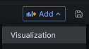
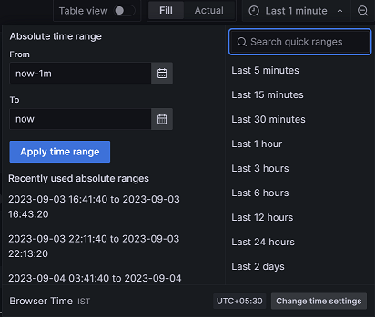

Applying visualization to RMF data
By adding panels to dashboards, you can effectively present your RMF data in a visual format. Each panel must require at least one query to display a significant visualization.
Before you begin
- Installed the IBM RMF for z/OS Grafana plugin. See Installing the RMF for z/OS plugin on Grafana.
- Added a RMF data source in Grafana. See Creating RMF data sources.
- Understood query languages of the RMF. See IBM RMF query languages.
Procedure
- Identify the dashboard for which you want to add visualization.
- Perform one of the steps described in the following table:
-
Click + Add visualization to add visualization to your
data.
Note: The navigation of the user interface can differ based on the Grafana version that is currently installed.The Edit panel is displayed.
- Go to step 6.
-
Click from the dashboard header.

The Edit panel is displayed. -
Enter a name for the panel in the Title field.
Optionally you can also provide a description for the panel that you are creating.
When you add the description for the panel, a notification icon is displayed after the Panel title, as shown in the following image:
-
Select one of the visualization types from the drop-down menu:
You can choose Report for IBM RMF for z/OS or built-in Bar chart Grafana visualization types from the drop-down list.
-
Click the Query tab, and then enter a query in the query
language of the RMF data source.
Note: You can click + Query to add multiple queries.
-
Click the Transformation tab, and then select a
transformation from the list.
Upon accessing the transformation options, a dedicated row is presented for configuration.Note: You can click + Add Transformation to add multiple transformations to data.
- Select the existing data sources from the Data source drop-down list.
-
Click the Time Picker drop-down list to select relative
time range options and set custom absolute time ranges.

-
Click the Refresh dashboard
icon to query the RMF
data source.
Grafana provides you with a preview of your query results along with the corresponding visualization.
- Optional: Click Apply to view your changes applied to the dashboard.
- Click Save, and then enter a note describing the changes you have made.
- Click Save to store the changes made to the dashboard.
Results
What to do next
Grafana provides a range of visualizations that cater to different use cases. For more information about the built-in panels, options, and typical usage, refer to the Grafana documentation.
You can also configure the panel options based on your requirements. For more information refer to the Grafana documentation.
You can add multiple transformation to your data. When there are multiple transformations, Grafana applies them sequentially. Each transformation produces a result set that is passed on to the next transformation in the pipeline. Grafana provides several ways that you can transform data. For entire list of transformations, refer to the Grafana documentation.